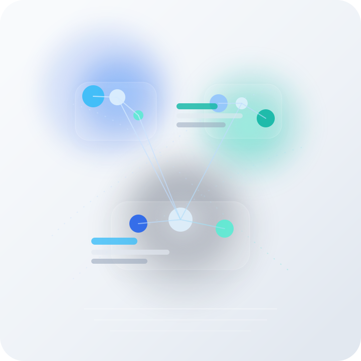

Senior Full-Stack Engineer

I build scalable web platforms from concept to deployment, with a focus on clean architecture, polished UI, and product outcomes that hold up in production.
As a Senior Full‑Stack Engineer, I design and deliver scalable, production‑grade web platforms end‑to‑end. I tackle complex business problems with pragmatic architecture, clean, testable code, and data‑driven decisions, building resilient APIs, high‑performance frontends, and secure cloud‑native services. My focus is also on CI/CD, observability, automated testing, and security best practices to ensure reliable, maintainable systems. I continuously evaluate and adopt modern tools and patterns to drive measurable product and business impact.
Full-stack platform for sports academy operations with multi-role portals and payment processing
The Sports Academy Management System provides a comprehensive solution for managing all aspects of a sports academy, from student enrollment and class management to payment processing and attendance tracking. The system streamlines operations while providing secure, role-based access to different user groups.
This project demonstrates expertise in full-stack development, payment gateway integration, modern UI libraries, and secure multi-tenant architecture. It showcases the ability to deliver a professional, user-friendly platform that meets the complex needs of educational institutions.
Enterprise-grade platform for dynamic workflows, alarms, and task management
Throughout the Ascom Ofelia project, I maintained high coding standards, implemented robust error handling, and ensured system reliability for enterprise-level operations. The platform significantly improved workflow efficiency and provided comprehensive alarm management capabilities.
This project experience showcases my expertise in .NET development, clean architecture, Blazor frontend development, and enterprise system design. It demonstrates the ability to deliver scalable, high-performance solutions for complex business workflow requirements.
Online E-commerce Platform Development for New Zealand Market
Throughout the project, I maintained a high level of professionalism, adhered to timelines, and collaborated effectively with team members. The resulting e-commerce platform provided a streamlined and exceptional online shopping experience for customers in the New Zealand market.
This project experience showcases my expertise in e-commerce platform development, integration of third-party APIs, inventory management, real-time updates, and efficient data processing. It demonstrates my ability to deliver high-quality solutions tailored to specific market requirements.
A System fully integrated with Stripe Payment Gateway for Customer and Payment management
The Customer & Payment Management Portal provides a comprehensive solution for businesses to manage their client base and handle one-time and subscription-based payments. By integrating with the Stripe Payment Gateway and leveraging WooCommerce and WordPress, the portal offers a seamless and efficient experience for customer and payment management.
This project showcases expertise in PHP development, payment gateway integration, customer and payment management, and WordPress plugin development. It demonstrates the ability to deliver a user-friendly and feature-rich solution tailored to businesses' needs.
A Cutting-Edge Survey and Reporting Tool for Assessing Organizational Cybersecurity Levels and Measures
The Cyber Security Survey Tool offers a comprehensive platform for companies to assess their cyber security measures. By allowing clients to complete a detailed survey, processing the data, and generating PDF reports, the tool provides valuable insights and guidance for enhancing their cyber security practices.
This project highlights expertise in web application development, automated scoring and reporting, PDF generation, and data security. It demonstrates the ability to deliver a secure and user-friendly solution tailored to assessing and improving the cyber security of client businesses.
Web application specifically designed to streamline and optimize case management processes for law firms based in Australia
The Case Management System is designed to streamline the management of legal cases within an Australian legal firm and its sub-branches. By centralizing case-related information, managing payment details, providing specialized logins, and facilitating integration across cases and departments, the system enhances efficiency and collaboration within the firm.
This project demonstrates expertise in web application development, legal case management, payment processing, user authentication, and multi-department integration. It showcases the ability to deliver a tailored solution that meets the specific needs of legal firms and promotes seamless information flow and collaboration.
(Main Project, Currently Building)
JobEngine is my current main project and is being built as a SaaS application for teams that need reliable, high-throughput background processing. It provides queue-driven execution, retries with backoff, priority routing, delayed and scheduled jobs, idempotent processing, observability dashboards, and resilient worker orchestration for at-scale workloads.
Social web application is a Platform for finding the like-minded people and allows users to socialize with others. Users can upload photos, chat, and manage their profiles with CRUD functionalities.
Task manager app helps the user to manage his day to day tasks more effectively. This web application has a create, read, update and delete funtionalities. It has build using the MEAN stack which is popular among single page applications like this.
This is an Artificial intelligence based Face recognition website. This is a front end site which allows the user to include and image url and detect the faces in that particular image.
Face Recognition App is and full-stack application which is counting the faces in and image by using an Artificial Intelligence API service. It also includes register and login funtionalities for a limited number of users.
This little website provide and easy way of adding gradient colors to the website by selecting an appropriate color theme. The desiners can select a gradient color background and copy the code underneath and paste it in their css code. this could make the jobs easier for adding customized background color to their website projects.